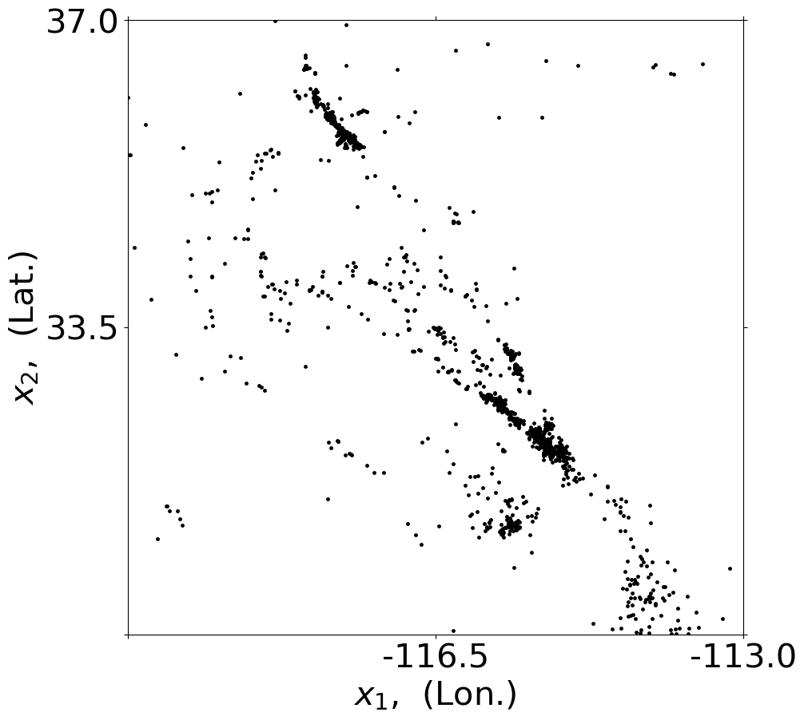
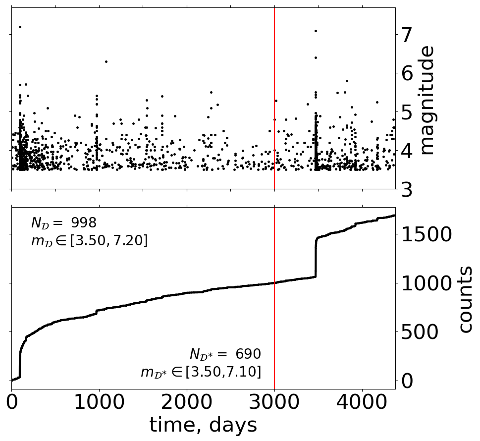
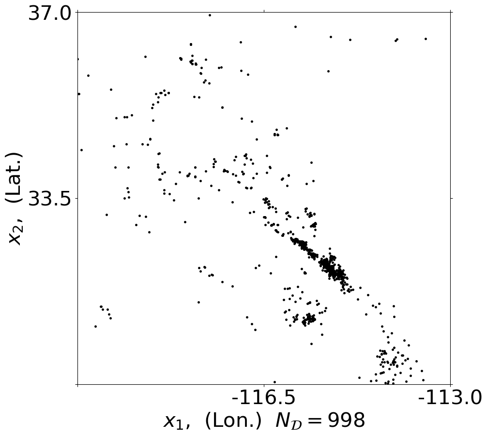
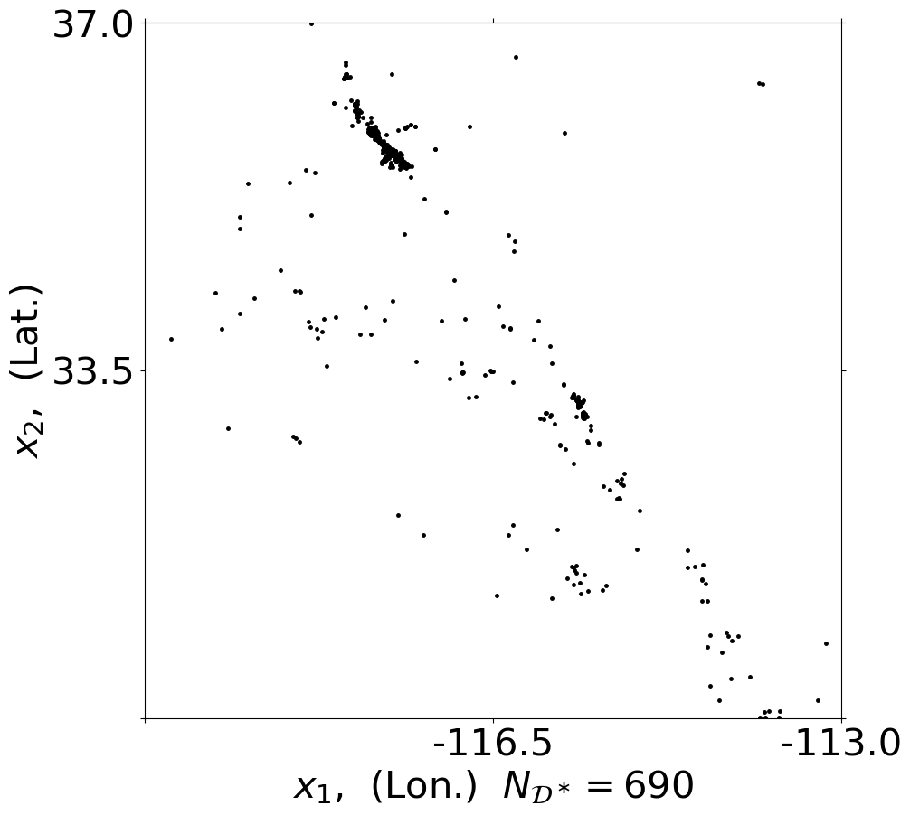
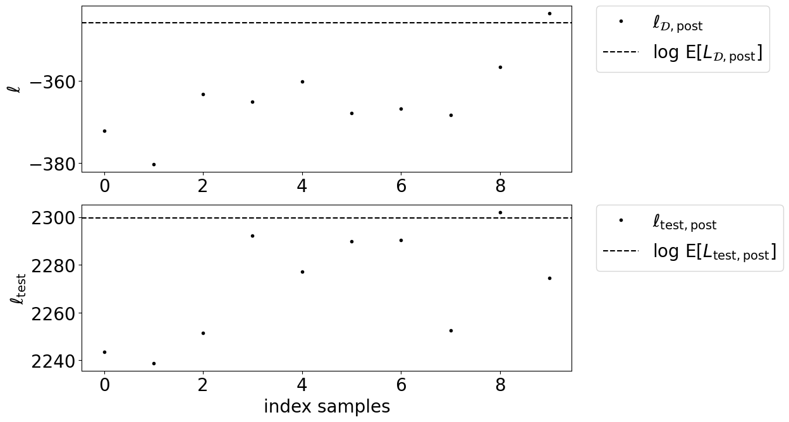
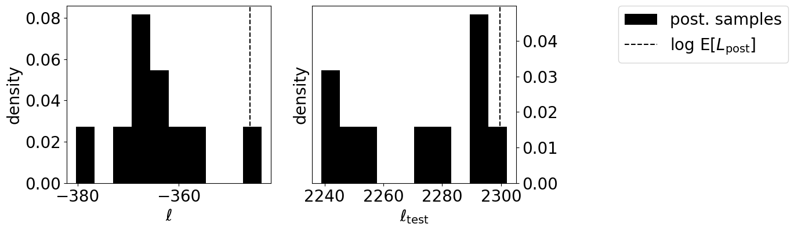
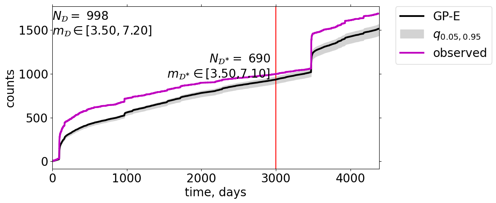
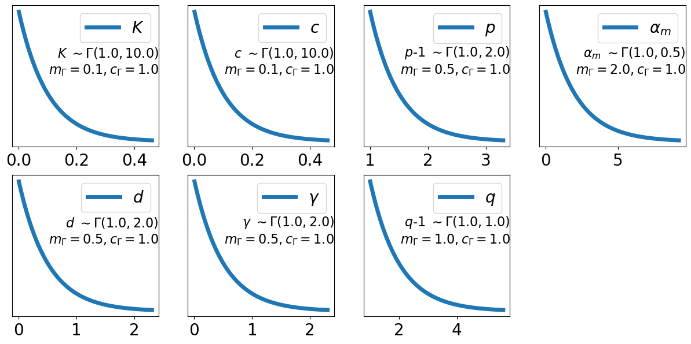

Inference: classical ETAS MLE#
Maximum likelihood (classical way)#
Starting classical MLE requires a gpetas setup_obj_mle as described above. It contains everything you need: data, domain definition, setup variables.
Load or generate a setup_obj_mle as described above and start ML inference the sampler.
[1]:
import gpetas
import numpy as np
import datetime
time_format = "%Y-%m-%d %H:%M:%S.%f"
# auto reload using developer version
%load_ext autoreload
%autoreload 2
Load setup_obj_mle which includes data_obj and domain_obj#
In this example we load a previously generated setup_obj_mle.
[2]:
case_name = 'Rxxx'
print(case_name)
output_dir = './output/inference_results'
fname = output_dir+'/setup_obj_default_%s_mle.all'%case_name
setup_obj_mle = np.load(fname,allow_pickle=True)
#vars(setup_obj_mle)
Rxxx
Start MLE#
[3]:
mle_obj = gpetas.mle_KDE_ETAS.mle_units(data_obj=setup_obj_mle.data_obj, setup_obj=setup_obj_mle)
All positions are shifted such that the origin of X domain is (0,0)
MLE routine : mle_units()
Rxxx read with 998 (m>=3.50 & 0.0 <= t <=3000.0) events
Start values of the params: mu_start= 0.003394557823129252
spatial kernel for offspring : R
Check setup theta_start [mufac, K, alpha, c, p, d, gamma, q - 1]: [1. 0.0025 1.8 0.01 1.2 0.05 0.5 1. ]
Rupture length parameterization with:
Start values of the params: K,c,p,a,d,g,q,b,m0= [2.5000000e-03 1.0000000e-02 1.2000000e+00 1.8000000e+00 5.0000000e-02
5.0000000e-01 2.0000000e+00 2.3977128e+00 3.5000000e+00]
--------------------------------------------------------------
KDE parameters:
Nnearest = 15
h_min_degree = 0.05 (units) degrees.
X domain of inference is: [[0. 7.]
[0. 7.]]
Rxxx read with 998 (m>=3.50 & t<=3000.0) events
--> RESULT for time interval [0.0 3000.0]:
search: mu=1.000 K=0.0025 alpha=1.80 c=0.0100 p=1.20 d=0.0500 gamma=0.50 q=2.00 --> Nback=499.0 Ntot=609.7 (Z=998) nLL=3366.188708
/Volumes/data_SFB1294/pack/gpetas_github/gpetas/utils/mle_KDE_ETAS.py:531: ComplexWarning: Casting complex values to real discards the imaginary part
'search: mu=%.3f K=%.4f alpha=%.2f c=%.4f p=%.2f d=%.4f gamma=%.2f q=%.2f --> Nback=%.1f Ntot=%.1f (Z=%d) nLL=%f\r' % (
`xtol` termination condition is satisfied.0.0078 p=1.10 d=0.0021 gamma=0.22 q=1.56 --> Nback=265.0 Ntot=975.0 (Z=998) nLL=470.368042418695
Number of iterations: 905, function evaluations: 13194, CG iterations: 5086, optimality: 1.35e-03, constraint violation: 0.00e+00, execution time: 1.6e+03 s.
n problem 0.9999996346073149
nround=1: mufac=0.531122 c=0.007763 p=1.102400 K=0.032427 alpha=1.149013 q=1.555504 d0=0.002116 gamma=0.216912 LL=-470.368042 dLL=10.000000
search: mu=1.013 K=0.0318 alpha=1.18 c=0.0081 p=1.10 d=0.0021 gamma=0.22 q=1.64 --> Nback=263.2 Ntot=973.8 (Z=998) nLL=347.318924558825
/Users/chrism/opt/anaconda3/envs/gpetas_env/lib/python3.9/site-packages/scipy/optimize/_hessian_update_strategy.py:182: UserWarning: delta_grad == 0.0. Check if the approximated function is linear. If the function is linear better results can be obtained by defining the Hessian as zero instead of using quasi-Newton approximations.
warn('delta_grad == 0.0. Check if the approximated '
`xtol` termination condition is satisfied.0.0081 p=1.10 d=0.0021 gamma=0.22 q=1.64 --> Nback=263.2 Ntot=973.8 (Z=998) nLL=347.318917
Number of iterations: 838, function evaluations: 13662, CG iterations: 3957, optimality: 8.42e-05, constraint violation: 0.00e+00, execution time: 1.7e+03 s.
n problem 0.9999996170596824
nround=2: mufac=1.013170 c=0.008091 p=1.103001 K=0.031793 alpha=1.182181 q=1.635878 d0=0.002149 gamma=0.223688 LL=-347.318917 dLL=123.049126
`xtol` termination condition is satisfied.0.0081 p=1.10 d=0.0022 gamma=0.22 q=1.64 --> Nback=263.0 Ntot=973.5 (Z=998) nLL=347.490761678428
Number of iterations: 922, function evaluations: 15165, CG iterations: 4404, optimality: 5.57e-05, constraint violation: 0.00e+00, execution time: 1.9e+03 s.
n problem 0.9999994297054512
nround=3: mufac=1.000132 c=0.008098 p=1.102999 K=0.031794 alpha=1.182231 q=1.637150 d0=0.002155 gamma=0.223591 LL=-347.490761 dLL=0.171845
`xtol` termination condition is satisfied.0.0081 p=1.10 d=0.0022 gamma=0.22 q=1.64 --> Nback=263.0 Ntot=973.5 (Z=998) nLL=347.493021360326
Number of iterations: 779, function evaluations: 13140, CG iterations: 3731, optimality: 3.79e-05, constraint violation: 0.00e+00, execution time: 1.6e+03 s.
n problem 0.999999603283174
nround=4: mufac=1.000002 c=0.008099 p=1.102999 K=0.031794 alpha=1.182229 q=1.637170 d0=0.002155 gamma=0.223589 LL=-347.493021 dLL=0.002259
Estimated values: mu=1.000002 K=0.031794 alpha=1.182229 c=0.008099 p=1.102999 d=0.002155 gamma=0.223589 q=1.637170
[-323.42216302]
All positions are rescaled with origin of original X domain [[-120. -113.]
[ 30. 37.]]
Plot summary#
You can directly plot a summary of the Bayesian inference or you can first do MLE and plot subsequently a summary with comparison
[6]:
save_GS_obj = GS.save_data
gpetas.summary.summary_gpetas(save_GS_obj=save_GS_obj,mle_obj=mle_obj,fout_dir=save_GS_obj['setup_obj'].outdir)
from orig. data_obj |T_training| [3000.] |X| 49.0
testing periods
[[ 0. 3000.]
[3000. 4383.]] days.
Number of employed posterior samples: 10
Current T_star_testing = [ 0. 3000.]
Employed number of posterior samples: 10
Current T_star_testing = [3000. 4383.]
Employed number of posterior samples: 10
gpetas: [-345.89229143 2299.6937258 ]
[6]:
<gpetas.utils.summary.summary_gpetas at 0x7fd108fabd60>








[ ]: